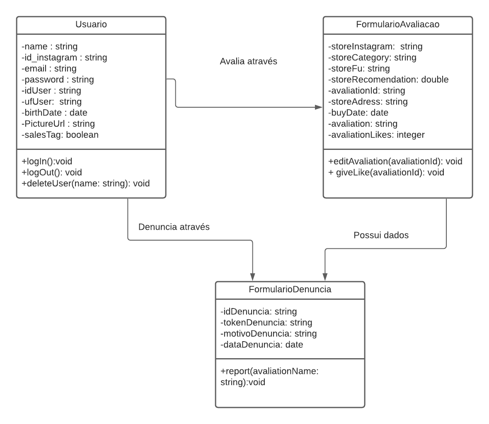

Documento de Arquitetura
Histórico de Revisão
| Data | Versão | Modificação | Autor |
|---|---|---|---|
| 22/03/2021 | 0.1 | Criação do documento | Luíz Gustavo |
| 25/03/2021 | 0.2 | acrescentando a representação da arquitetura e visão geral | Felipe Chermont |
| 27/03/2021 | 0.3 | Atualizando parte do documento 2, 3.1, 3.2 | Deivid e Victor |
| --- |
1. Introdução
1.1 Objetivo
A finalidade deste documento é listar os passos seguidos para realizar o projeto AvaInsta, sendo assim, estão inclusos neste a arquitetura utilizada e também as ferramentas de desenvolvimento.
1.2 Escopo
O AvaInsta visa ser uma aplicação web voltada para usuários do aplicatico Instagram, funcionando como sistema de avaliações e recomendações de perfis de venda do mesmo.
2. Representação da Arquitetura
Representação dos serviços e modelos implementados na aplicação. A arquitetura utilizada no projeto será a arquitetura baseada no modelo MVC. A aplicação web Avainsta será feita pelo Django, um framework escrito em python. O modelo de arquitetura utilizado dentro do framework Django é o MVT (Model, View e Template), que é derivada do padrão arquitetural MVC (Model, View e Controller). De acordo com o The Django Book, a parte de controller, em Django, é tratada pelo próprio framework. Portanto a View do MVT desempenha um papel próximo, mas não igual ao controller. Em função disso, sempre que for feita uma requisição do front, o django exige que sempre seja devolvido alguma coisa.

2.1 Tecnologias
2.1.1 Front End
- BootStrap
O bootstrap é um framework web com código-fonte aberto para desenvolvimento de componentes de interface e front-end para sites e aplicações web que usam majoritariamente HTML, CSS e JavaScript.
A escolha de se utilizar este framework se da por ser um dos projetos mais bem avaliados e utilizados no GitHub e possuir uma documentação ampla, além da facilidade de implementação e utilização.
2.1.2 Back End
- Django
O Django é um framework para desenvolvimento web, escrito em Python que utiliza o padrão model-template-view(MTV).
O Django é ótimo para aplicações menores e que precisam de implementação rápida, como é o caso do AvaInsta. Segue o principio DRY (Don't Repeat Yourself), que busca o melhor aproveitamento do código feito e evita repetições e conta com diversos pacotes prontos para auxiliar e otimizar o desenvolvimento do projeto.
2.1.3 Banco de Dados
- PostgreSQL
É um sistema gerenciador de banco de dados objeto relacional, desenvolvido com código aberto.
O postgreSQL é capaz de lidar desde pequenas a grandes aplicações, estando em desenvolvimento a mais de 30 anos e comportanto quaisquer necessidades que o projeto possa precisar.
O projeto utilizará o PostgreSQL como o banco de dados da aplicação Avainsta, por ser simples a utilização e pela segurança.
3. Metas e Restrições
3.1 Metas
Desenvolver uma aplicação de avaliação web que avalia e recomenda produtos comprados em lojas informais do instagram.
3.2 Restrições
| Requisito | Ferramenta/Solução |
|---|---|
| Linguagem | Python 3 |
| Framework | Django 2 |
| FrontEnd | BootStrap |
| Plataforma | Web |
| Segurança | Provida pelo próprio framework Django |
| Linguagem Natural | Lingua Portuguesa |
4. Visão Geral
A visão geral demonstra, através de diagramas, a aplicação e modelo de implementação do AvaInsta, baseado nas tecnologias e frameworks que serão utilizados em seu desenvolvimento.
4.1 Visão de Casos de Uso
A visualização de Casos de Usos mostram as interações entre o sistema e seu ambiente. Descrevendo as principais funcionalidades que o sistema pretende ter.
Demonstrados através do Diagrama de caso de uso:
4.1.2 Visão de Implementação
A visualização de implementação contém uma visão geral do modelo de implementação e organização dos pacotes e camadas do projeto.
O projeto segue a arquitetura proposta pelo framework Django, onde cada aplicação do projeto é separada em uma pasta contendo os seguintes arquivos e espeficicações:
-
models.py: Serve como modelo de classe que será salva no banco de dados
-
urls.py: Funciona como um endpoint. Usado na conexão da aplicação com os templates desenvolvidos.
-
views.py: Recebe a requisição Web e retorna uma resposta, sendo ela o conteudo da página.
-
tests.py: Onde será realizado todos os tipos de testes necessários para o projeto.
Como pode ser visualizado através do Diagrama de pacotes:

4.1.2 Visão de Dados
A visão de dados fornece uma visualização melhor do que será armazenado no banco de dados do projeto. Como pode ser observado através do diagrama de classes:
